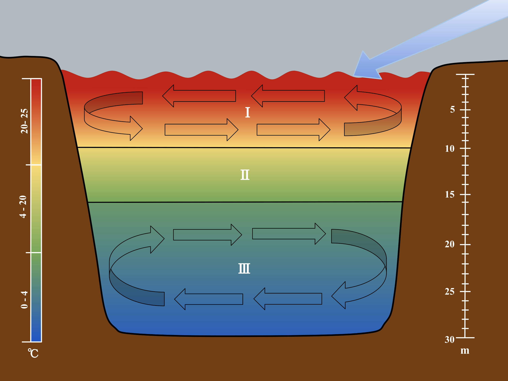
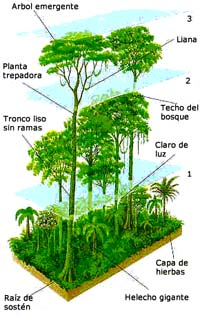
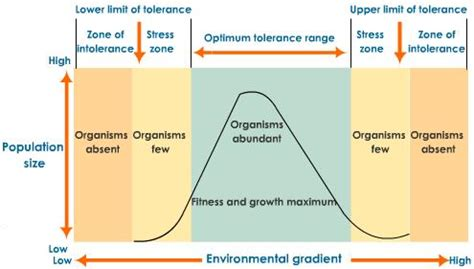
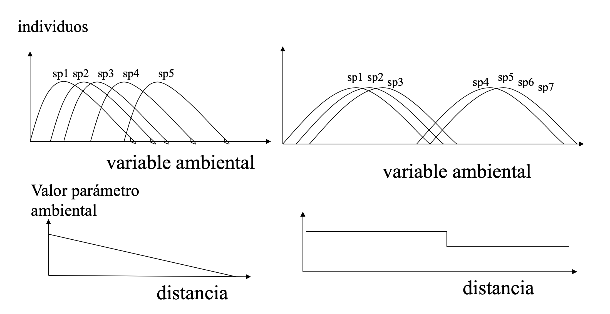
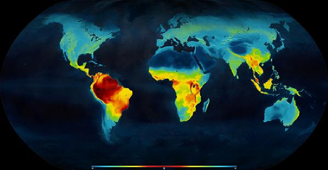
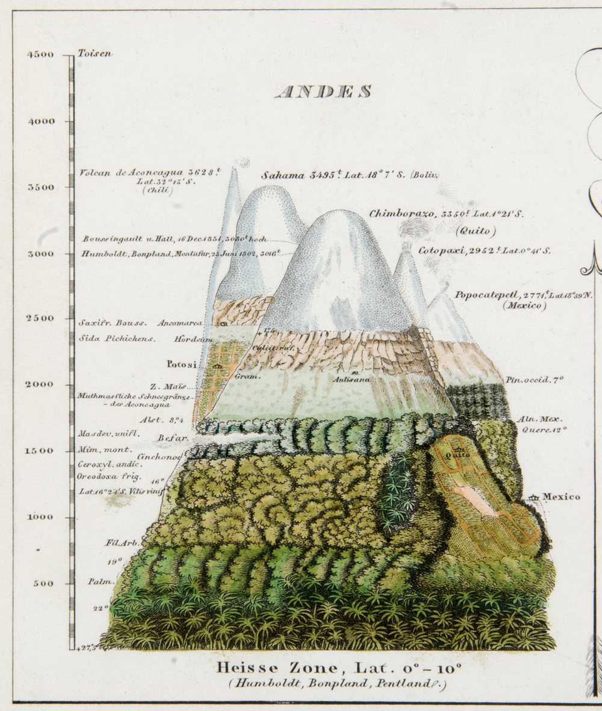
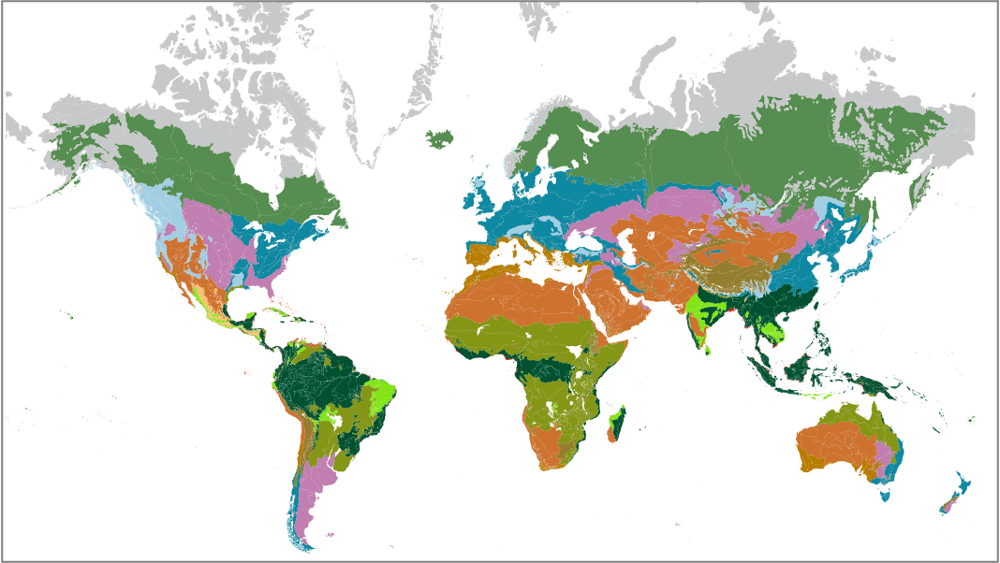
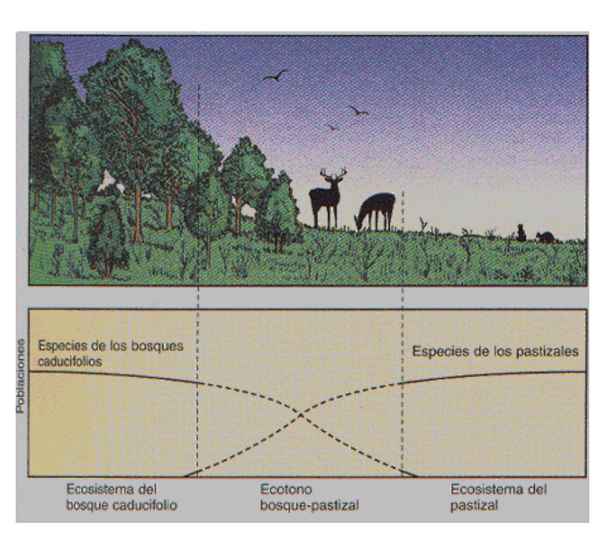
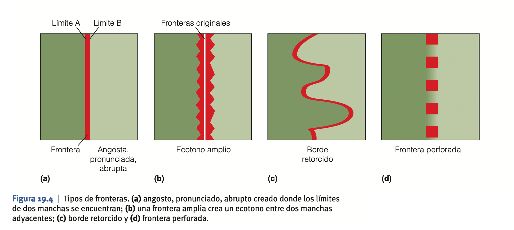

- Ecosistemas: generalidades
- Definición
- Sistema biológico constituido por una comunidad de organismos vivos (biocenosis) y el medio físico donde se relacionan (biotopo)
- «Toda unidad que incluye todos los organismos (es decir: la “comunidad”) en una zona determinada interactuando con el entorno físico de tal forma que un flujo de energía conduce a una estructura trófica claramente definida, diversidad biótica y ciclos de materiales (es decir, un intercambio de materiales entre las partes vivientes y no vivientes) dentro del sistema es un ecosistema».
Odum, E. P. (1971). Fundamentals of ecology, third edition. Saunders, Nueva York.
- Caracterización de los ecosistemas
- ... en una zona determinada interactuando con el entorno físico...
- Distribución y tamaño dependiente de la escala
- Nuestro sistema digestivo (lleno de virus y bacterias) es un ecosistema.
- Un bosque de coníferas en Finlandia es un ecosistema.
- El planeta Tierra puede describirse como un ecosistema.
- Los ecosistemas se organizan espacialmente a modo de "muñeca rusa"
- estructura o escala espacial
- vertical: cómo se organizan los elementos del ecosistema en un gradiente de altura -> gravedad, energía solar.
- Sistemas acuáticos
- 
- marinos
- salinidad
- temperatura
- rotación de la Tierra
- Sistemas terrestres
- 
- horizontal: cómo se distribuyen los elementos estructurales del ecosistema en el eje horizontal -> topografía, latitud, longitud, etc.
- Las especies del ecosistema responden de manera diferente a las variables ambientales -> gradientes.
- 
- 
- La resultante de los patrones de distribución individuales explica la distribución global de:
- 
- 
- 
- Ecotonos
- Transiciones entre ecosistemas a lo largo de cambios en gradientes ambientales. Estrictamente hablando es una zona de cambio (brusco o progresivo) en las condiciones ambientales, que provoca cambio en la estructura del ecosistema.
- 
- Tipos
- 
- Ejemplos
-

- La variable ambiental temperatura va cambiando gradualmente conforme subimos a una montaña, pero llega un momento en que supera un umbral que hace imposible la vida de los árboles.
- Bosques de ribera
- Marismas
-
- estructura o escala temporal
- Sucesión: cambios en la estructura y funcionamiento de un ecosistema a escala sub-evolutiva. El proceso por el cual el suelo desnudo se cubre de vegetación.
- Evolución: Cómo cambian en el largo plazo los ecosistemas.
- ... flujo de energía conduce a una estructura trófica...
- Flujo de energía y materia
- Producción primaria
- Producción secundaria
- Descomposición
- ... ciclos de materiales...
- ciclos biogeoquímicos
- Impactos humanos
- De los impactos locales
- A los impactos globales
- Cambio global -> Antropoceno
- Hacia la socioecología